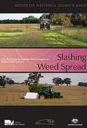
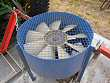
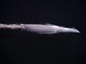
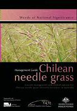

|
African boxthorn
| alligator weed
| asparagus weeds
| athel pine
| bellyache bush
| bitou bush/boneseed
| blackberry
| brooms
| cabomba
| cat's claw creeper
| Chilean needle grass
| fireweed
| gamba grass
| gorse
| hymenachne
| lantana
| madeira vine
| mesquite
| mimosa
| opuntioid cacti
| Parkinsonia
| parthenium weed
| pond apple
| prickly acacia
| rubber vine
| sagittaria
| salvinia
| serrated tussock
| silverleaf nightshade
| water hyacinth
| willows

Documents and Resources

Biodiversity impacts of Chilean needle grass Nassella neesiana on Australian indigenous grasslands
Ian Guthrie Faithfull, B.Sc. (Hons.)
School of Engineering and Science
Faculty of Health, Engineering and Science
Victoria University, St Albans, Victoria, Australia
A thesis submitted in fulfillment of the requirements of the degree of Doctor of Philosophy
Slashing Weeds Spread - DVD

This new DVD resource provides a presentation on new hygiene technology for roadside management of weeds including slash covers and fans. It also features a presentation on Chilean needle grass identification. This DVD was developed to increase the capacity of land managers to identify CNG and prevent its further spread.
|

To view the slasher technology presentation (part 1) online via youtube click here. (external link) |
To view the slasher technology presentation (part 2) online via youtube click here. (external link) |

To view the identification of Chilean needle grass presentation online via youtube click here. (external link) |
CNG Management Brochure

Hard-copy versions of the Best Practice Manual and brochure can be obtained from: NSW DPI Bookshop - ph. 1800 028 374 email: (bookshop@dpi.nsw.gov.au).
|
Research
CNG News
Edition 7
(1007kb)
|
Edition 6
(595kb)
|
Edition 5
(230kb) |
Edition 4
(435kb) |
Edition 3
(657kb) |
Edition 2
(734kb) |
Edition 1
(344kb) |
|
Tussock Terminators Research Forum, Albury NSW - 2nd – 3rd November 2005
Proceedings of the Tussock Terminators Research Forum at Lake Hume Resort, Albury NSW - 2nd – 3rd November 2005 (pdf - 1.9mb)
Presentations to the Tussock Terminators Research Forum (Microsoft Powerpoint)
Note: filesizes of some presentations are very high and may be unsuitable for download over dial-up internet connections.
Prospects for biological control of serrated tussock and Chilean needle grass
Presented by Ann Lawrie (3,776kb - approx download time at 56k - 9 mins.)
Chilean needle grass (Nassella neesiana) Integrated grazing for success
- Charles Grech (1,559kb - approx download time at 56k - 4 mins.)
The Unpalatable Grass Syndrome in Australia – An Agricultural and Environmental Disaster
- David McLaren (19,726kb - approx download time at 56k - 47 mins.)
The National �Serrated Tussock Survey: � Serrated Tussock Resistance to the Herbicide, Flupropanate in Australia
- David McLaren (30,222kb - approx download time at 56k - 72 mins.)
Management Strategies for giant Parramatta grass
- David Officer (19,774kb - approx download time at 56k - 48 mins.)
Monaro Grasslands R & D Project
- Jo Powell (50,785kb - approx download time at 56k - 121 mins.)
A 10 year love-hate relationship with CNG: lessons learnt
- Mark Gardener (353kb - approx download time at 56k - 1 min.)
Spraytopping as a management tool to reduce seed production in Chilean needle grass infestations
- Shiv Gaur (19,556kb - approx download time at 56k - 47 mins.)
Finding the Best amongst Best Bets:�A Conceptual Model
- Tereso Morfe (894kb - approx download time at 56k - 3 mins.)
Options for control of Nassella trichotoma on the Northern Tablelands of NSW.
- Tieneke Trotter (266,067kb - approx download time at 56k - 630 mins.)
Grassy weeds in pastoral systems - CONTEXT, NEEDS AND DIRECTIONS
- Tony Grice (3,704kb - approx download time at 56k - 9 mins.)
The Ecology & Management of Serrated Tussock in Native Pastures
- Warwick Badgery (2,171kb - approx download time at 56k - 6 mins.)
SITE MAP

| |
| | |
|
|